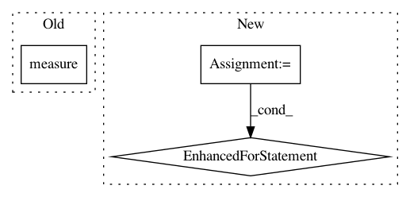

a938495cb605334fdbcfea2c30993d190a5bf42b,cirq/circuits/circuit_operation_test.py,,test_decompose_repeated_nested_measurements,#,638
Before Change
cirq.measure(a, key="zero-zero-zero-D"),
cirq.measure(a, key="zero-zero-one-D"),
cirq.measure(a, key="zero-one-Q"),
cirq.measure(a, key="zero-one-zero-D"),
cirq.measure(a, key="zero-one-one-D"),
cirq.measure(a, key="one-Y"),
cirq.measure(a, key="one-zero-Q"),
After Change
assert cirq.measurement_keys(op3) == set(expected_measurement_keys_in_order)
expected_circuit = cirq.Circuit()
for key in expected_measurement_keys_in_order:
expected_circuit.append(cirq.measure(a, key=key))
assert cirq.Circuit(cirq.decompose(op3)) == expected_circuit
assert cirq.measurement_keys(expected_circuit) == set(expected_measurement_keys_in_order)
In pattern: SUPERPATTERN
Frequency: 3
Non-data size: 3
Instances
Project Name: quantumlib/Cirq
Commit Name: a938495cb605334fdbcfea2c30993d190a5bf42b
Time: 2021-02-18
Author: smitsanghavi@users.noreply.github.com
File Name: cirq/circuits/circuit_operation_test.py
Class Name:
Method Name: test_decompose_repeated_nested_measurements
Project Name: Ambrosys/glyph
Commit Name: ffa0db4fdca9cef31a72b35a1f7eef78733f5b0c
Time: 2017-02-24
Author: mquade@uni-potsdam.de
File Name: glyph/cli/glyph_remote.py
Class Name: RemoteAssessmentRunner
Method Name: update_fitness
Project Name: dit/dit
Commit Name: 7eaf3dc5b70a5e7cddcd38ac97dac41920f5efc9
Time: 2017-02-11
Author: ryangregoryjames@gmail.com
File Name: dit/profiles/information_partitions.py
Class Name: DependencyDecomposition
Method Name: _partition